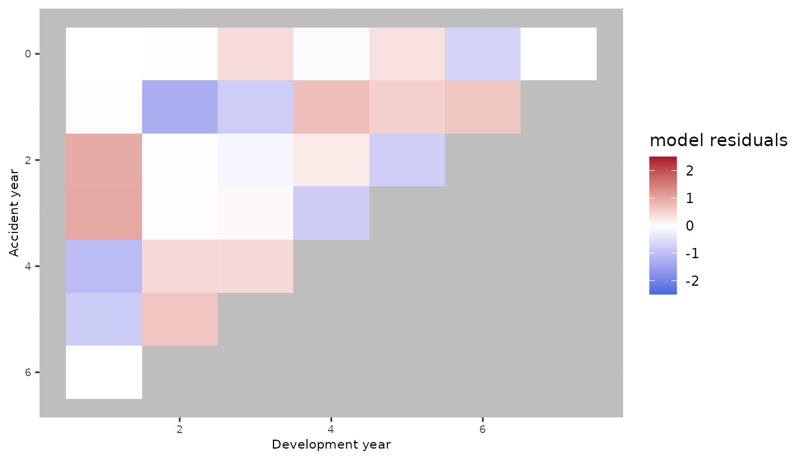
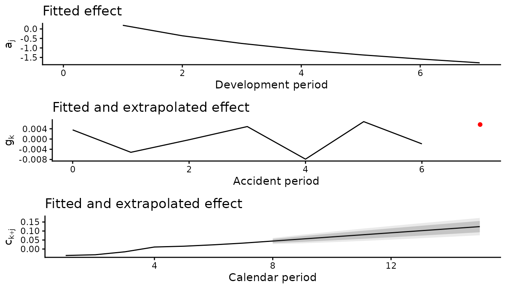

Model comparison and reproducible regression checks
Source:vignettes/modelscomparison.Rmd
modelscomparison.RmdUpdated replication workflow
The replication code has been updated because the apc
package used by the original implementation has been removed from CRAN.
The revised code no longer depends on apc and uses the
current clmplus implementation instead. These changes are
intended to preserve the numerical results of the original analysis
while ensuring that the replication workflow can be run using packages
that are currently available.
The strings "a", "ac", "ap",
and "apc" below are model identifiers, not package
dependencies.
Deterministic comparison
data("AutoBI", package = "ChainLadder")
triangle <- ChainLadder::incr2cum(AutoBI$AutoBIPaid)
prepared <- AggregateDataPP(triangle)
model_ids <- c("a", "ac", "ap", "apc")
fits <- setNames(lapply(model_ids, function(id) {
clmplus(prepared, hazard.model = id, verbose = FALSE)
}), model_ids)
predictions <- lapply(fits, predict)The age-only fit reproduces chain ladder.
mack <- ChainLadder::MackChainLadder(triangle)
age_prediction <- predictions[["a"]]
stopifnot(isTRUE(all.equal(
unname(age_prediction$full_triangle),
unname(mack$FullTriangle),
tolerance = 1e-10
)))
data.frame(
accident_period = seq_along(age_prediction$reserve) - 1L,
reserve = unname(age_prediction$reserve),
ultimate = unname(age_prediction$ultimate_cost)
)
#> accident_period reserve ultimate
#> 1 0 0.00 63918.00
#> 2 1 11995.02 74756.02
#> 3 2 28848.23 89937.23
#> 4 3 47752.62 99797.62
#> 5 4 67734.68 107290.68
#> 6 5 74742.25 96776.25
#> 7 6 97541.29 109482.29
#> 8 7 102444.81 105245.81
sum(age_prediction$reserve)
#> [1] 431058.9Partial forecasting fills only the requested future calendar diagonals.
one_year <- predict(fits[["apc"]], forecasting_horizon = 1)
dim(one_year$full_triangle)
#> [1] 8 8
dim(one_year$apc_output$lower_triangle_apc)
#> [1] 8 1
plot(fits[["apc"]])
plot(predictions[["apc"]])